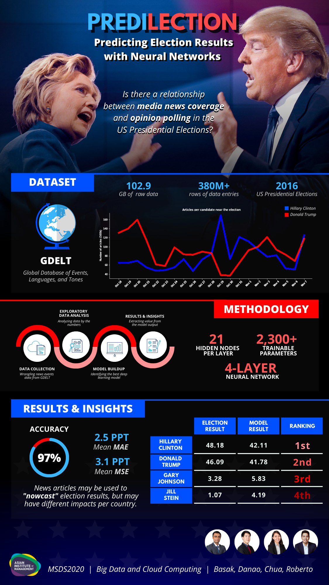

Predilection
Predicting Winning Political Candidates From News Tone using GDELT dataset

Introduction
Predicting the future seems to be one of mankind's deepest fascinations, and why ever not? The ability to foresee future events presents a luxury of practical benefits. For one, it enables businesses to forecast sales and predict the next occurrence of equipment failure. It also allows investors to make an informed decision on which stocks to buy or which parcels of land would be most profitable for the new year. Moreover, it helps medical professionals have an idea of how long a patient would stay in the hospital based on her health records. Getting ahead gives one the necessary time to prepare or anticipate an emerging situation, and thus take prompt action to either mitigate the risk or take advantage of the opportunity. Although the science of forecasting finds applications in many different fields, it is not a complete stranger in the spheres of politics. The United States Presidential Elections is perhaps one of the most important political events, anticipated not only by Americans but as well as the rest of the world. This phenomenal transfer of power from one leader to another could either maintain the status quo or entirely redefine the world order. Thus, there is a strong, concerted effort among researchers to get the pulse of the voters either through social weather surveys, online polls, and other predictive methods. Marketing intelligence company IDC reports that the entire global datasphere will grow to about 175 zettabytes by 2025. With the emergence of disruptive technologies like Big Data and AI, our ability to predict future events has become more accurate than ever before. In this project, the authors explore the predictive power of Big Data in predicting election results.
Problem Statement
In this project, the authors intend to explore the potential predictive power of online news coverage with respect to the winnability of a certain political candidate. One of the motivations of this project is to devise an alternative measure to social weather surveys in gauging the sentiment of voters. Since news articles, as they should be, are technically less biased as compared to tweets or posts on social media, it may be inferred that the model would give a more reliable output.
If you wish to have a copy of the technical paper, data, or the code used in this project, kindly contact us via e-mail or LinkedIn.